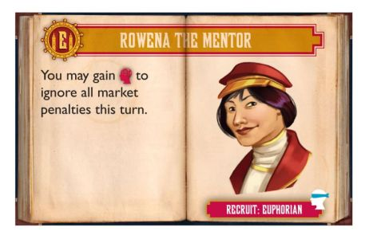

|
The Palace of Forced Altruism
market will prevent you from gaining resources. As a reminder
that you're not receiving the resources you expect, the lost resources
are placed in the trash. It also provides that you can
discard resources, which you can do by clicking on the resources you
want to discard, in any context where you are not expected to make a
payment of resources.
|
|
The recruit Doug the Builder
lets you sacrifice a worker in lieu of payment on the market opening
spaces. This "sacrifice" move works just like any other form of
payment - it happens automatically if there are no choices involved, or
if you have the choice of paying the resource or sacrificeing the
worker, you click on the victim
|
|
Recruit Lionel the Cook can ignore a single market by paying food. He can do so by placing a food offering before taking a worker action.
|
| Recruit Borna the Storyteller
can trade a Book or Bifocals artifact for either a Free artifact from
the Bazaar, or a Resorce. She can do so by playing the artifact
card before taking a worker action. |
|
Recruit Lars the Ballooneer allows the worker to be moved and reused. This ability is available only immediately after the worker is
placed
and the balloon gained. Otherwise, the re-use ability could
interact with other recruits, or with doubles rolls, in many complex
ways.
|

|
Recruits Rowena The Mentor and Chaga the Gamer can be used during any turn, but rather than ask every time, they can be activated by opening the recruit overlay.
|
|
|
|
|
|
|
|
|